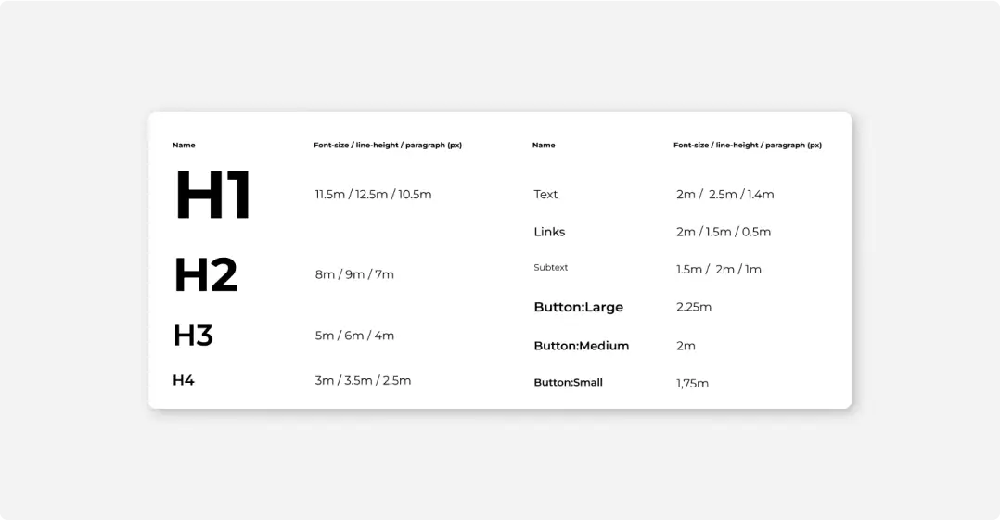

#1
Шрифт
Основной шрифт в интерфейсах CURSA — «Montserrat».
Шрифт Montserrat относится к категориям гротески, декоративные. Гарнитура содержит 18 начертаний. Автор Julieta Ulanovsky. Распространяется бесплатно для личного и коммерческого использования.
#2
Стили
Ниже в списке приведены размеры для заголовков и остальных текстов интерфейса, однако этот выбор носит рекомендательный, а не обязательный характер.
Выбирайте размеры и насыщенность, которые больше подойдут аудитории вашего продукта, но помните, что заголовки различных уровней должны хорошо отличаться. Это помогает ориентироваться в тексте и вычленять главное.
#3
Размеры
Для текстов, размером >3m высота строки отличается от размера кегля на +1m, а отступ между абзацами на -1m. Для текстов, размером <3m высота строки отличается от размера кегля на +0.5m, а отступ между абзацами на -0.5m.
Для наилучшей читабельности длина строки должна быть длинной до 75 символов, включая пробелы.
Модуль и сетка имеют прикладное значение — помогают выбирать размеры и отступы, но самостоятельной ценности у них нет, поэтому текстовые блоки, а тем более их базовые линии, не нужно фанатично вписывать в восьмипиксельную сетку.